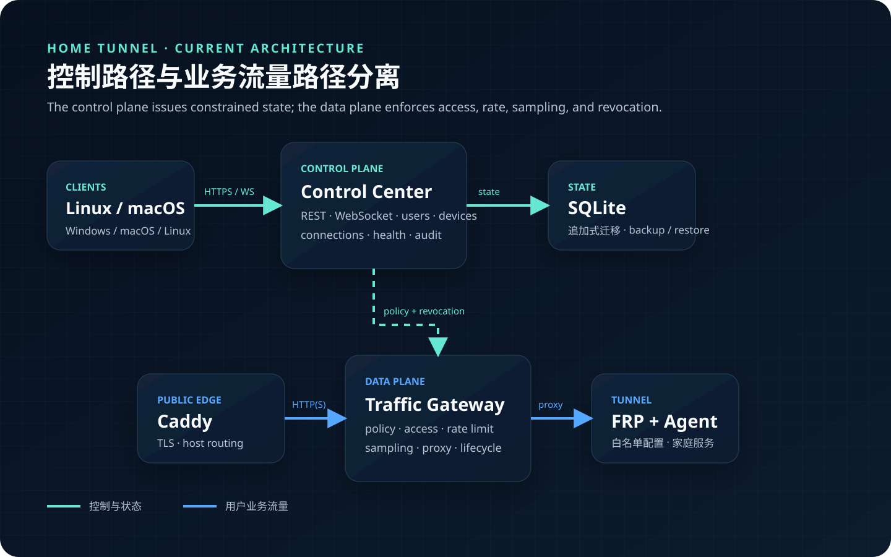
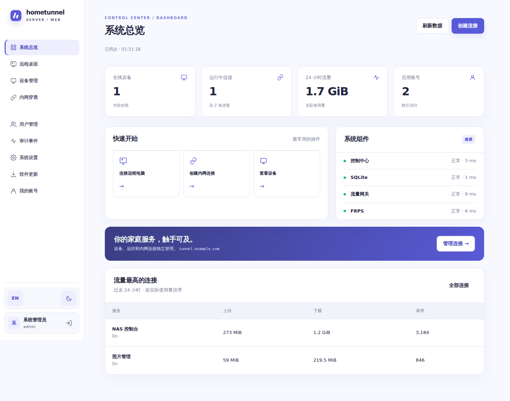
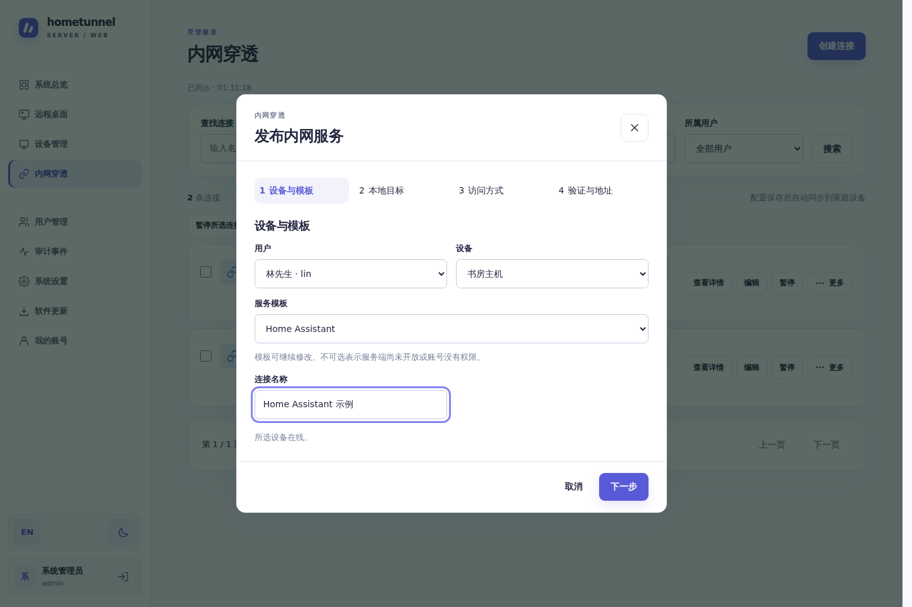
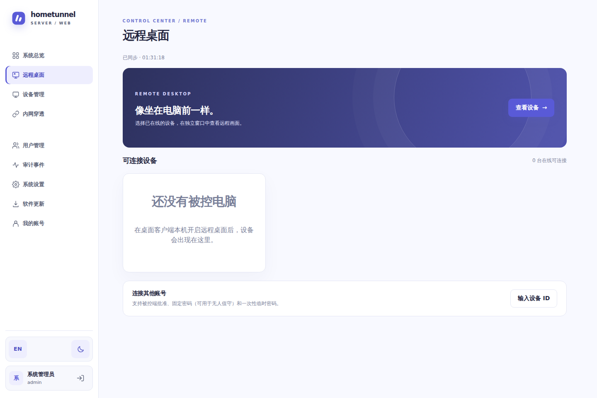
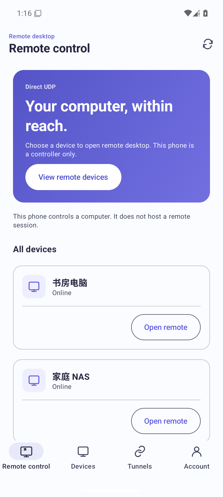
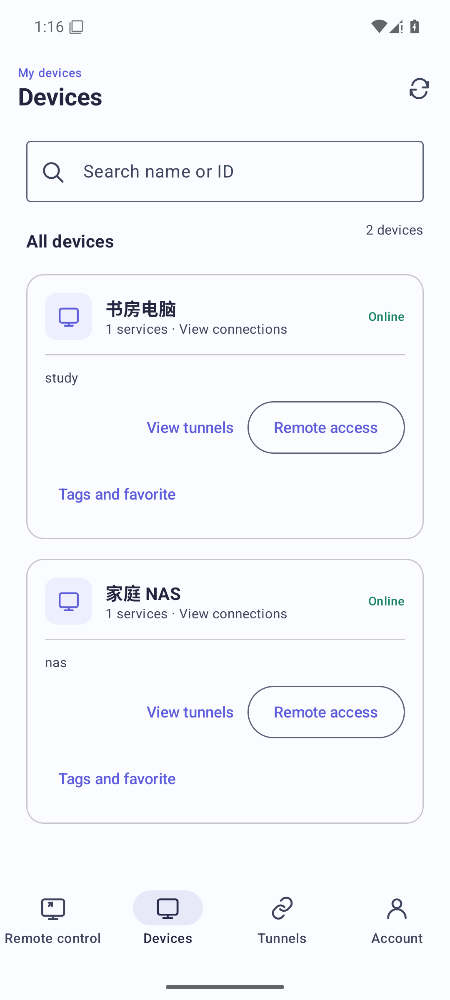

Home Tunnel stable 10.0.0
Remote control uses UDP. Publishing uses FRP.
Reach a home computer and its services through a server you run. Authorized remote desktop uses end-to-end DTLS-encrypted UDP, direct first. NAS, Home Assistant, and other local services are published with FRP. The stable release is 10.0.0. Some acceptance gates were not run and were waived by the owner; a waiver is not a pass, and the release notes list them.
Remote control in 10.0.0
Both sides sign in to the same server, then connect directly.
Hosting is on after sign-in. Find the computer by its grouped 9-digit device ID. A stranger's request pops up a bottom-right approval card on the host; a fixed password skips approval; a one-time temporary password uses the same device ID. Those passwords are not the account password, and a device ID is not an enrollment code. Accepting grants screen, input, clipboard, files, and system audio for that connection; the microphone is never auto-approved. Picture and input do not travel through FRP.
- Windows, Web, and Android can control another device. Allowing control of this device is a Windows host action.
- When direct fails, a browser viewer can reach a 10.0.0 host through the server's optional UDP TURN relay. Payloads stay end-to-end encrypted, so the relay cannot read them. There is no TCP fallback.
- Android controllers and 9.x hosts are direct-only. Blocked UDP is a failure.
Verification scope and owner waivers
What was tested, and what was not.
A Web viewer controlled a Windows 10.0.0 host through the production server, over direct UDP and the relay: screen, keyboard, mouse, Chinese text, clipboard both ways, viewer-to-host files, system audio, the approval popup, and the temporary password. These were development builds of the same feature code, not re-run on the final bytes.
Host-to-viewer files, the fixed password on the final build, Android controlling Windows, physical arm64 phones, multiple monitors, upgrade and restore, long-running soaks, and the network matrix were not run. The owner waived them, so their acceptance is pending. Lock screen, pre-login, and UAC secure-desktop control are not available, and there is no microphone return.
Windows host only
Allow control of this device
Approval, the fixed password, and the one-time temporary password are set on the Windows computer being controlled. Unattended access is the fixed password on the signed-in desktop. While connected, the host shows a "being remotely controlled · disconnect" bar. A device ID identifies that computer. A one-time enrollment code only registers it with the server and is not a remote-control password.
FRP 0.70.1
Publish a local service on the existing tunnel.
The Agent on a home computer or NAS connects to your FRP service. HTTP/HTTPS crosses your own edge and gateway. TCP/UDP uses a port an administrator assigns and does not add HTTP sign-in. The target application keeps its own authentication and encryption.
- Deploy the 10.0.0 server, replace the bootstrap admin password, and turn on MFA.
- Install the same client version on the home computer or NAS and enroll it with an account or a one-time code.
- Open the target on that machine first, create the connection, then visit the public address from another network.
10.0.0 guided publishing checks the local target and confirms it against the device report. A template fills editable fields and does not mean the service is reachable. The server assigns public TCP/UDP ports. The tunnel runtime matrix was waived, not run.
Pictures show only what is already labeled.






Capture sources and image hashes
Waiting for an actual product screenshot
Downloads
Install 10.0.0 today.
Stable downloads are 10.0.0, published with owner waivers; a waiver is not a pass. If the manifest cannot be refreshed, use the 10.0.0 links on the download page.
FAQ
How are remote control and tunnels different?
Remote control is authorized direct UDP for the screen and input. Tunnels use FRP to publish HTTP, TCP, or UDP services. One path does not replace the other.
Do I need my own server?
Yes. A public Linux host runs the control plane and FRP. Home devices connect out to it. This website is not a public demo server.
If UDP fails, does remote control switch to the tunnel?
No. Remote payloads never use FRP or TCP. When direct fails, a browser viewer can use the server's optional UDP TURN relay, which cannot read the encrypted payload. Android controllers and 9.x hosts are direct-only. Blocked UDP fails with an error.
Can I download 10.0.0?
Yes. 10.0.0 is the stable release, published with owner waivers: host-to-viewer files, Android controlling Windows, physical arm64 phones, upgrade and restore, long-running soaks, and the network matrix were not verified. Lock screen, pre-login, UAC secure desktop, and microphone return are not available. The release notes have the full list. The previous 9.0.0 release pages remain available.
Can I use secure desktop, audio, and files?
Secure desktop is not available. System audio (WASAPI loopback) and viewer-to-host files were tested from Web to Windows; host-to-viewer files were not verified. There is no microphone return. See the scope page.
Are the Windows packages publisher-signed?
No. Windows and macOS packages have no Authenticode or Developer ID certificate. Check the SHA-256. Android keeps its existing release certificate.